서큘러스의 교육 브랜드 THE MAKER는 AI 로봇 piBo · piBrain과 AI 교육 소프트웨어 Edge Lab · AI Lab · EasyDetect를 만듭니다. 하나하나가 완결된 수업 도구라, 교실 환경과 수업 목표에 맞게 골라 쓰면 됩니다.
THE MAKER, the education brand of Circulus, makes the AI robots piBo · piBrain and the AI education software Edge Lab · AI Lab · EasyDetect. Each is a complete teaching tool, so pick what fits your classroom.
AI가 교실 PC 안에서 돌아가 사진과 목소리가 밖으로 나가지 않습니다
AI runs on the classroom PC, so photos and voices never leave it
블록으로 시작해 같은 화면에서 파이썬으로 넘어갑니다
Start with blocks and move to Python on the same screen
AI Lab은 웹 브라우저, Edge Lab은 노트북만 있으면 됩니다
AI Lab needs just a browser, Edge Lab just a laptop
제품마다 하나로 완결된 수업 도구라 교실 환경에 맞게 골라 씁니다
Each product is a complete teaching tool, so pick what fits your classroom
움직이는 휴머노이드 파이보, 화면과 버튼이 달린 AI 보드 파이브레인. 로봇의 카메라와 센서로 AI를 체험하고 가르치며, 블록과 파이썬으로 직접 코딩합니다.
piBo, a humanoid robot that moves, and piBrain, an AI board with a screen and buttons. Students try and teach AI with the robot's camera and sensors, and code it with blocks and Python.
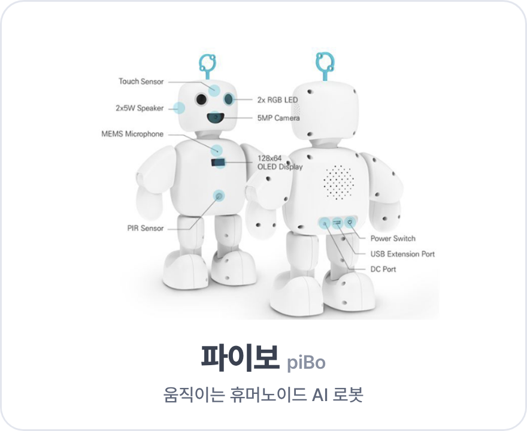
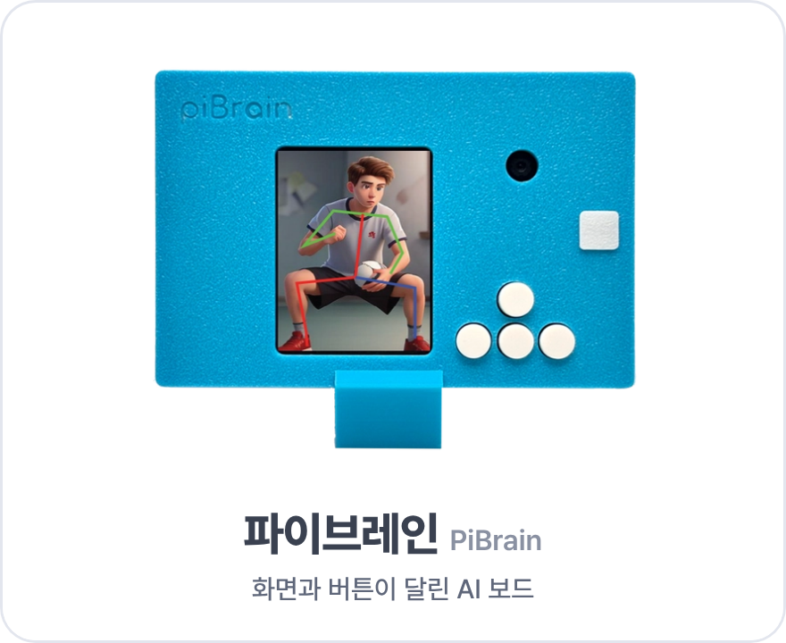
로봇 안에 들어 있는 개발 환경입니다. 같은 와이파이에 연결한 PC 브라우저로 접속해서 씁니다.
The development environment built into the robot. Open it from a PC browser on the same Wi-Fi.
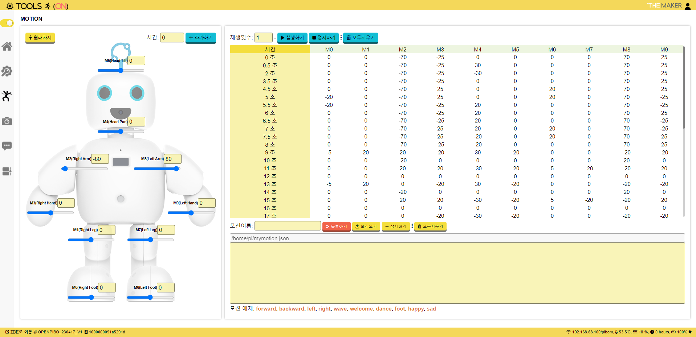
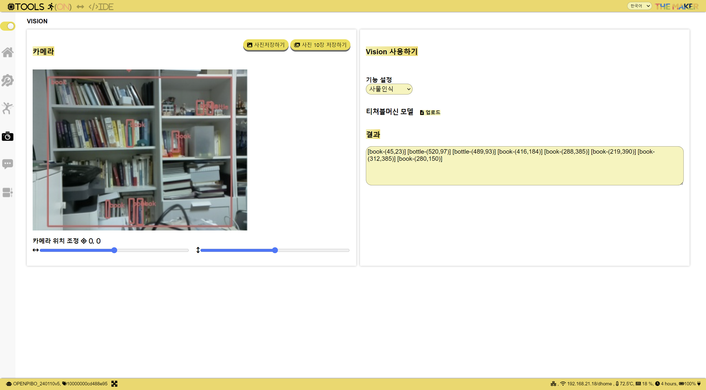
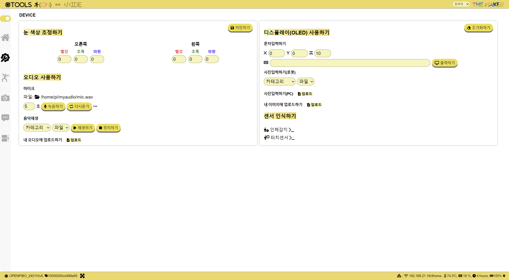
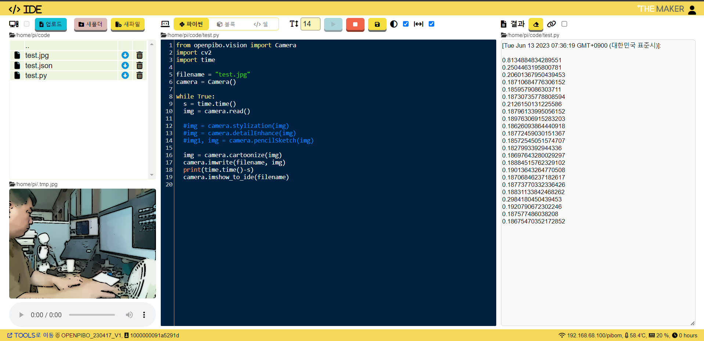
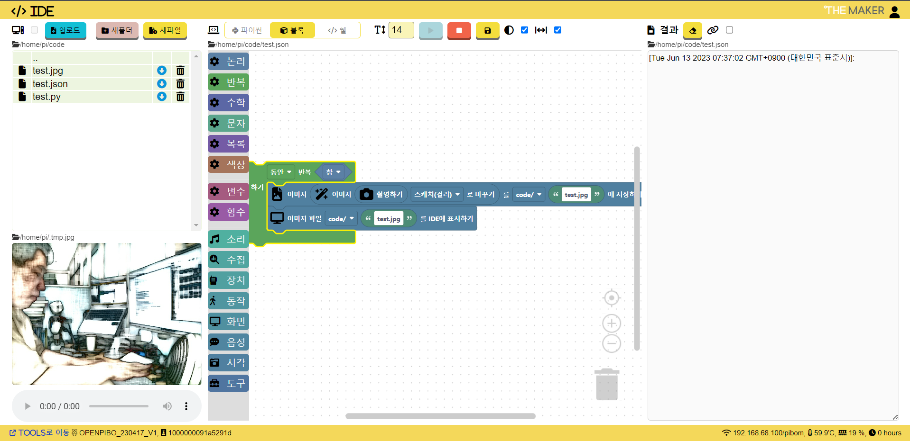
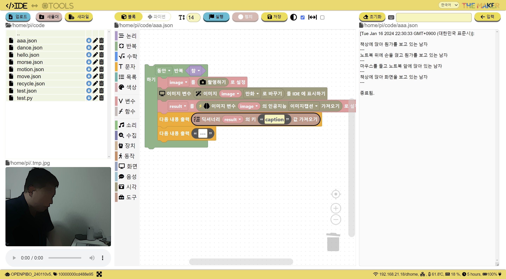
수업 준비는 화면 속 파이보로, 수업 당일에는 교실의 로봇을 한 화면에서.
Prepare lessons with an on-screen piBo, then run the whole classroom of robots from one screen.
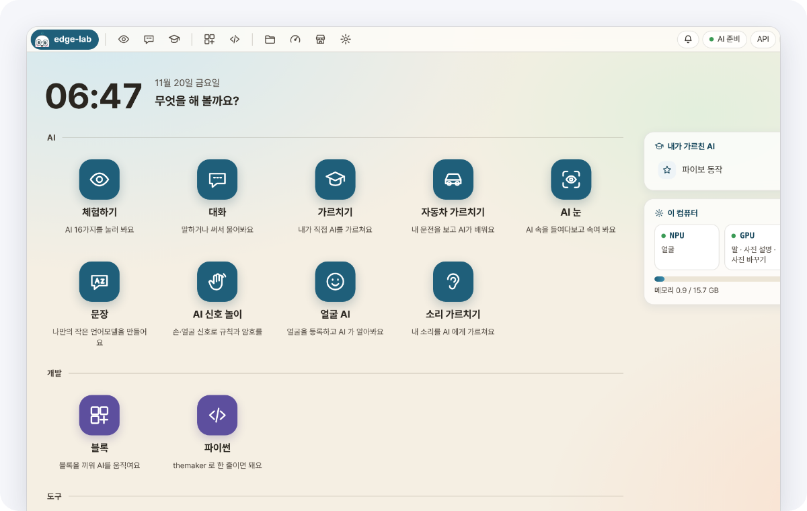
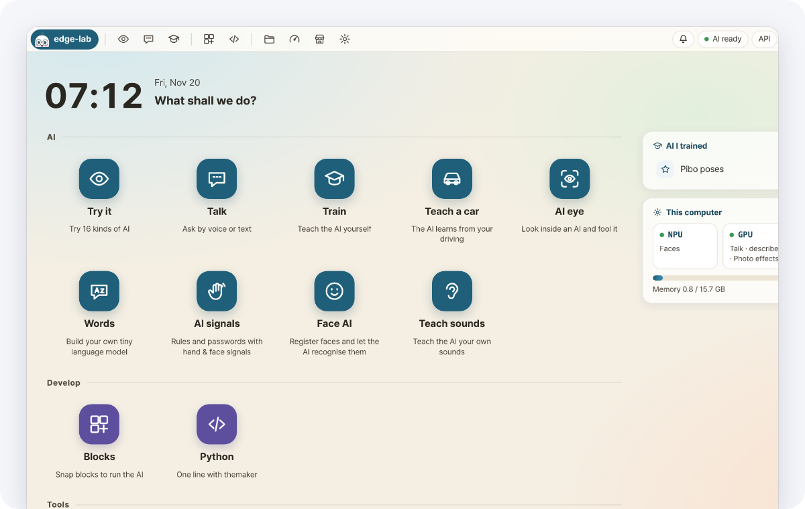
설치하고 나면 인터넷 없이 교실 노트북 안에서 모든 AI가 돌아갑니다.
Once installed, every AI runs inside the classroom laptop — no internet needed.
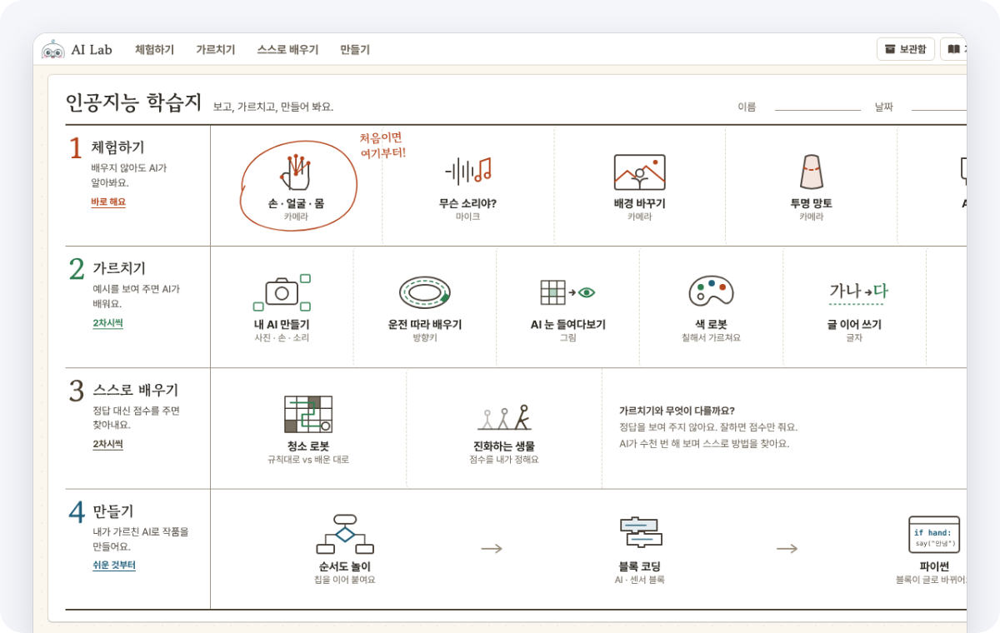
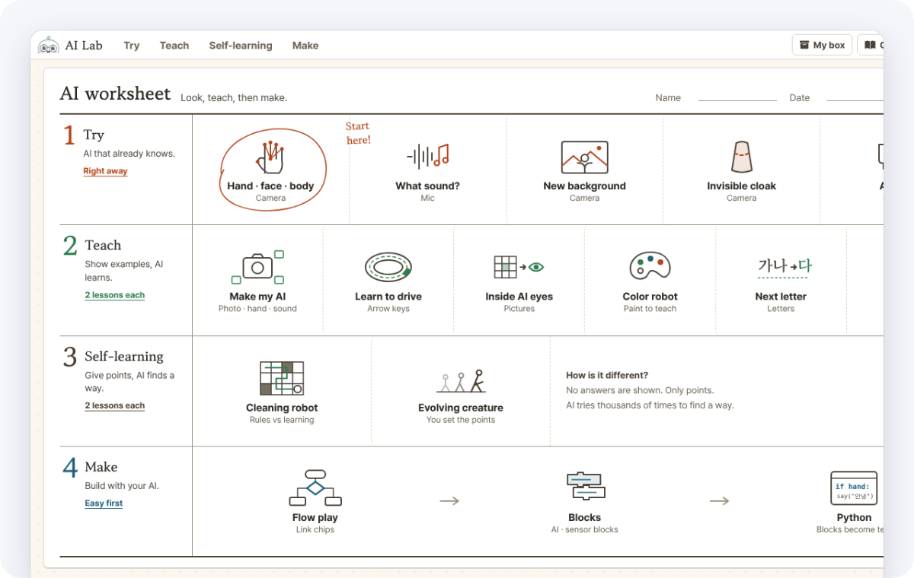
설치 없이 링크만 열면 시작합니다. 사진과 소리는 기기 밖으로 나가지 않습니다.
Nothing to install — open the link and start. Photos and sounds never leave the device.
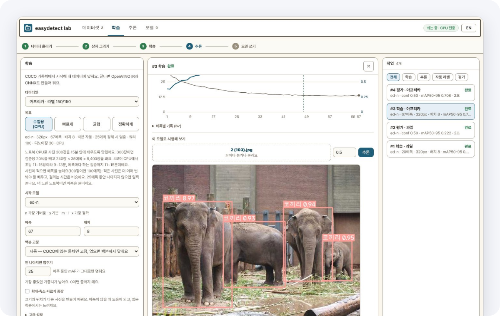
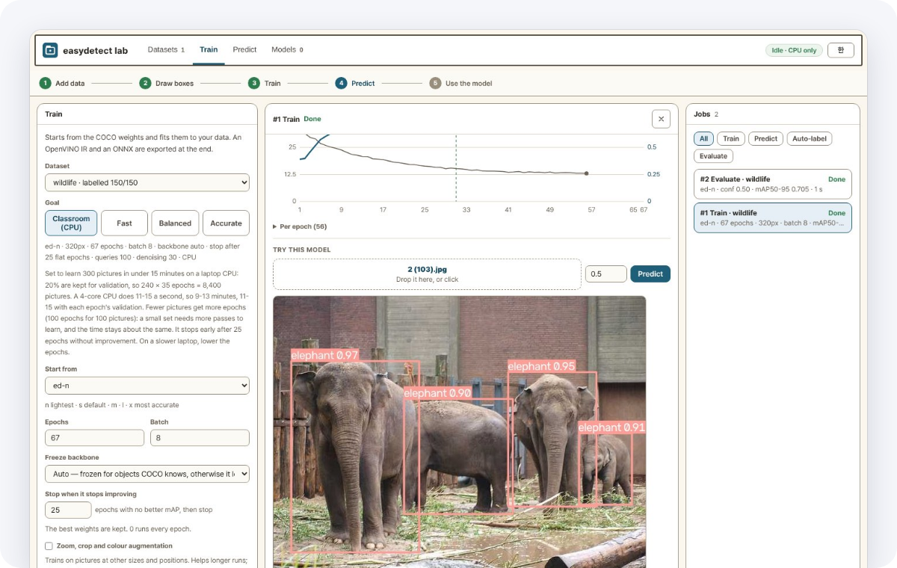
사진에 상자를 그려 노트북에서 학습하고 시험한 뒤, 만든 모델을 어디서든 씁니다.
Draw boxes on your photos, train and test on a laptop, then use the model anywhere.
도입 문의를 남겨 주시면 담당자가 연락드립니다
Leave a request and our team will get back to you
운영체제(OS) 버전마다 쓸 수 있는 기능과 블록이 다릅니다. 기기와 같은 버전의 문서와 예제를 보세요.
Features and blocks differ by OS version, so use the docs for the version on your device.
260624v1처럼 적혀 있습니다.260624v1.OS 설치 이미지와 사용 가이드는 공유 폴더에 있습니다. 지원 하드웨어: Raspberry Pi 4B
OS images and setup guides are in the shared folder. Supported hardware: Raspberry Pi 4B